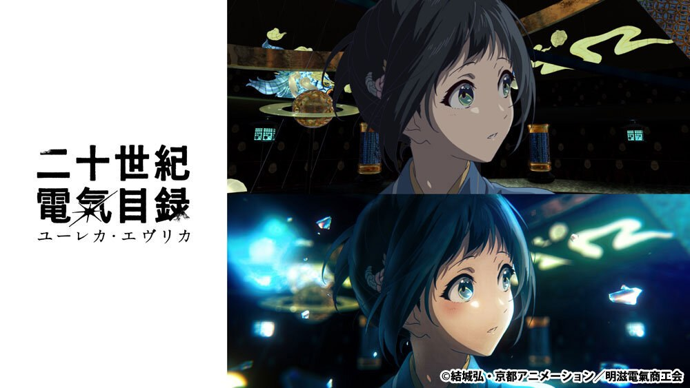

京都動畫《二十世紀電氣目録》：Blender／Houdini 3DCG 背景追求『動畫手繪印象』而非寫實
CGWORLD 拆解京都動畫新作背景／ED 的 3DCG 與攝影方法，展示 Blender、Houdini 等工具如何服務手繪動畫質感，而不是單純提高 PBR 寫實度。

場景製作 ★★★★☆
情報簡析
BRIEF｜來源已驗證，但目前證據深度不足以支持完整 Production Analysis。
情報重點
案例的核心是把 3D 場景當成『支援 2D 動畫印象的結構工具』：Blender／Houdini 提供空間、程序化與鏡頭一致性，再透過材質、攝影與 compositing 把結果拉回手繪感。這與一般追求高寫實的 3D pipeline 目標不同。
導入判斷
對固定視角或 2.5D 遊戲場景很值得參考：可先用 3D 保證透視與重複資產，再主動壓低 AO、物理高光與細碎陰影，讓畫面更接近設定圖。文章是作品 case，若要轉成遊戲規格仍需自行量化材質、輪廓與後處理成本。